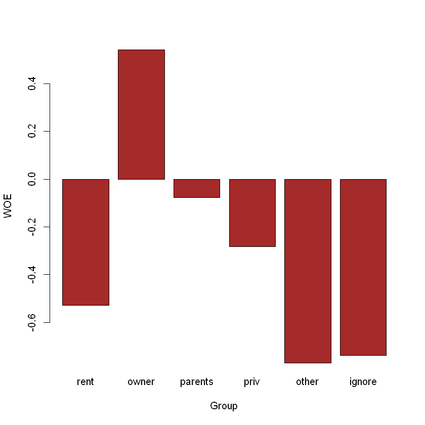
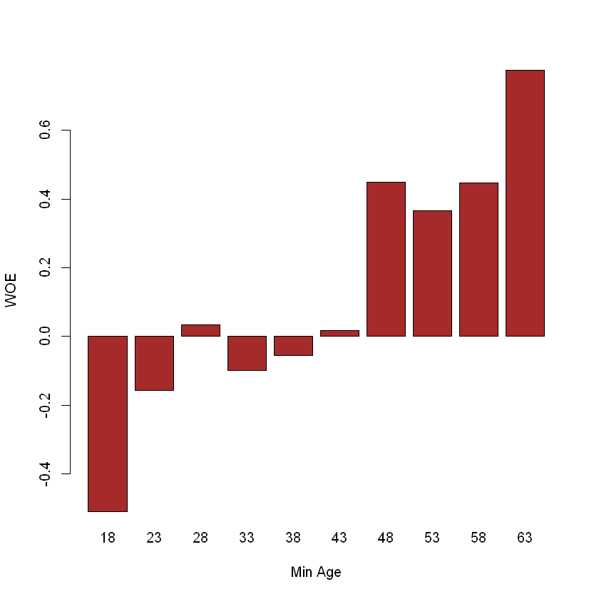

# install.packages("openxlsx")1 Woe Binning
2 Woe Binning
Курс: “Матетичне моделювання в R”
Sys.setlocale("LC_CTYPE", "ukrainian")
options(warn = -1)
'Ukrainian_Ukraine.1251'
2.1 Набір даних
Джерело: https://github.com/gastonstat/CreditScoring/blob/master/CleanCreditScoring.csv
Завантажимо дані:
library(openxlsx)
data <- openxlsx::read.xlsx("data/CreditScoring.xlsx", sheet = 1, startRow = 1, colNames = TRUE, rowNames = FALSE)
str(data)'data.frame': 4446 obs. of 16 variables:
$ Status : chr "good" "good" "bad" "good" ...
$ Seniority: num 9 17 10 0 0 1 29 9 0 0 ...
$ Home : chr "rent" "rent" "owner" "rent" ...
$ Time : num 60 60 36 60 36 60 60 12 60 48 ...
$ Age : num 30 58 46 24 26 36 44 27 32 41 ...
$ Marital : chr "married" "widow" "married" "single" ...
$ Records : chr "no_rec" "no_rec" "yes_rec" "no_rec" ...
$ Job : chr "freelance" "fixed" "freelance" "fixed" ...
$ Expenses : num 73 48 90 63 46 75 75 35 90 90 ...
$ Income : num 129 131 200 182 107 214 125 80 107 80 ...
$ Assets : num 0 0 3000 2500 0 3500 10000 0 15000 0 ...
$ Debt : num 0 0 0 0 0 0 0 0 0 0 ...
$ Amount : num 800 1000 2000 900 310 650 1600 200 1200 1200 ...
$ Price : num 846 1658 2985 1325 910 ...
$ Finrat : num 94.6 60.3 67 67.9 34.1 ...
$ Savings : num 4.2 4.98 1.98 7.93 7.08 ...Опишемо дані:
Status- credit status (Target)Seniorityjob seniority (years)Hometype of home ownershipTimetime of requested loanAgeclient’s ageMaritalmarital statusRecordsexistance of recordsJobtype of jobExpensesamount of expensesIncomeamount of incomeAssetsamount of assetsDebtamount of debtAmountamount requested of loanPriceprice of good
2.2 Простий бінінг змінних
2.2.1 Категоріальна змінна
Створимо дата-фрейм для зберігання інформації про групи змінної Home (як приклад біннігу категоріального показника):
home_groups <- data.frame(Group = unique(data$Home),
Good = c(0), Bad = c(0),
GoodP = c(0), BadP = c(0),
WOE = c(0), IV = c(0))
home_groups| Group | Good | Bad | GoodP | BadP | WOE | IV |
|---|---|---|---|---|---|---|
| <chr> | <dbl> | <dbl> | <dbl> | <dbl> | <dbl> | <dbl> |
| rent | 0 | 0 | 0 | 0 | 0 | 0 |
| owner | 0 | 0 | 0 | 0 | 0 | 0 |
| parents | 0 | 0 | 0 | 0 | 0 | 0 |
| priv | 0 | 0 | 0 | 0 | 0 | 0 |
| other | 0 | 0 | 0 | 0 | 0 | 0 |
| ignore | 0 | 0 | 0 | 0 | 0 | 0 |
Переглянемо можливі варіанти показника Status, який є залежною бінарною змінною поточної задачі:
library(gmodels)
CrossTable(data$Status)
Cell Contents
|-------------------------|
| N |
| N / Table Total |
|-------------------------|
Total Observations in Table: 4446
| bad | good |
|-----------|-----------|
| 1249 | 3197 |
| 0.281 | 0.719 |
|-----------|-----------|
Сформуємо групи та обчислимо значення по кожній групі:
for(i in 1:nrow(home_groups)) {
group <- home_groups$Group[i]
home_groups$Good[i] <- nrow(data[data$Home == group & data$Status == "good", ])
home_groups$Bad[i] <- nrow(data[data$Home == group & data$Status == "bad", ])
home_groups$GoodP[i] <- home_groups$Good[i]/nrow(data[data$Status == "good", ])
home_groups$BadP[i] <- home_groups$Bad[i]/nrow(data[data$Status == "bad", ])
home_groups$WOE[i] <- log( home_groups$GoodP[i] / home_groups$BadP[i])
home_groups$IV[i] <- (home_groups$GoodP[i] - home_groups$BadP[i])*home_groups$WOE[i]
}
home_groups| Group | Good | Bad | GoodP | BadP | WOE | IV |
|---|---|---|---|---|---|---|
| <chr> | <dbl> | <dbl> | <dbl> | <dbl> | <dbl> | <dbl> |
| rent | 585 | 388 | 0.182984048 | 0.310648519 | -0.52926313 | 0.067568098 |
| owner | 1716 | 390 | 0.536753206 | 0.312249800 | 0.54173490 | 0.121621331 |
| parents | 550 | 232 | 0.172036284 | 0.185748599 | -0.07668873 | 0.001051580 |
| priv | 162 | 84 | 0.050672505 | 0.067253803 | -0.28309010 | 0.004694001 |
| other | 173 | 146 | 0.054113231 | 0.116893515 | -0.77018467 | 0.048352412 |
| ignore | 11 | 9 | 0.003440726 | 0.007205765 | -0.73919894 | 0.002783113 |
Переглянемо сумарний IV:
home_iv <- sum(home_groups$IV)
home_iv
0.246070534510342
Візуалізуємо групи:
barplot(home_groups$WOE,
col="brown",
names.arg=c(as.character(home_groups$Group)),
xlab="Group",
ylab="WOE"
)
Створимо датафрейм для нових WOE-даних:
new_df <- data.frame(Status = data$Status, Home = data$Home, HomeWoe = c(0))Замінимо значення на WOE:
for(i in 1:nrow(home_groups)) {
group <- home_groups$Group[i]
woe <- home_groups$WOE[i]
new_df[new_df$Home == group, ]$HomeWoe <- woe
}
tail(new_df)| Status | Home | HomeWoe | |
|---|---|---|---|
| <chr> | <chr> | <dbl> | |
| 4441 | bad | other | -0.7701847 |
| 4442 | bad | rent | -0.5292631 |
| 4443 | good | owner | 0.5417349 |
| 4444 | bad | owner | 0.5417349 |
| 4445 | good | rent | -0.5292631 |
| 4446 | good | owner | 0.5417349 |
2.2.2 Числова змінна
Обрахуємо приклад числовиго показника (на прикладі Age):
min_age <- min(data$Age)
max_age <- max(data$Age)
step <- round(max_age - min_age)/10
age_groups <- data.frame(Min = seq(min_age, max_age-step, step),
Max = seq(min_age + step, max_age, step),
Good = c(0), Bad = c(0),
GoodP = c(0), BadP = c(0),
WOE = c(0), IV = c(0))
age_groups| Min | Max | Good | Bad | GoodP | BadP | WOE | IV |
|---|---|---|---|---|---|---|---|
| <dbl> | <dbl> | <dbl> | <dbl> | <dbl> | <dbl> | <dbl> | <dbl> |
| 18 | 23 | 0 | 0 | 0 | 0 | 0 | 0 |
| 23 | 28 | 0 | 0 | 0 | 0 | 0 | 0 |
| 28 | 33 | 0 | 0 | 0 | 0 | 0 | 0 |
| 33 | 38 | 0 | 0 | 0 | 0 | 0 | 0 |
| 38 | 43 | 0 | 0 | 0 | 0 | 0 | 0 |
| 43 | 48 | 0 | 0 | 0 | 0 | 0 | 0 |
| 48 | 53 | 0 | 0 | 0 | 0 | 0 | 0 |
| 53 | 58 | 0 | 0 | 0 | 0 | 0 | 0 |
| 58 | 63 | 0 | 0 | 0 | 0 | 0 | 0 |
| 63 | 68 | 0 | 0 | 0 | 0 | 0 | 0 |
Сформуємо групи:
for(i in 1:nrow(age_groups)) {
min <- age_groups$Min[i]
max<- age_groups$Max[i]
age_groups$Good[i] <- nrow(data[data$Age >= min & data$Age < max & data$Status == "good", ])
age_groups$Bad[i] <- nrow(data[data$Age >= min & data$Age < max & data$Status == "bad", ])
if(i == nrow(age_groups)) {
age_groups$Good[i] <- age_groups$Good[i] + nrow(data[data$Age == max & data$Status == "good", ])
age_groups$Bad[i] <- age_groups$Bad[i] + nrow(data[data$Age == max & data$Status == "bad", ])
}
age_groups$GoodP[i] <- age_groups$Good[i]/nrow(data[data$Status == "good", ])
age_groups$BadP[i] <- age_groups$Bad[i]/nrow(data[data$Status == "bad", ])
age_groups$WOE[i] <- log( age_groups$GoodP[i] / age_groups$BadP[i])
age_groups$IV[i] <- (age_groups$GoodP[i] - age_groups$BadP[i]) * age_groups$WOE[i]
}
age_groups| Min | Max | Good | Bad | GoodP | BadP | WOE | IV |
|---|---|---|---|---|---|---|---|
| <dbl> | <dbl> | <dbl> | <dbl> | <dbl> | <dbl> | <dbl> | <dbl> |
| 18 | 23 | 169 | 110 | 0.05286206 | 0.088070456 | -0.51045129 | 0.0179721723 |
| 23 | 28 | 505 | 231 | 0.15796059 | 0.184947958 | -0.15772892 | 0.0042566888 |
| 28 | 33 | 564 | 213 | 0.17641539 | 0.170536429 | 0.03389245 | 0.0001992523 |
| 33 | 38 | 491 | 212 | 0.15358148 | 0.169735789 | -0.10001179 | 0.0016156210 |
| 38 | 43 | 443 | 183 | 0.13856741 | 0.146517214 | -0.05578602 | 0.0004434881 |
| 43 | 48 | 320 | 123 | 0.10009384 | 0.098478783 | 0.01626700 | 0.0000262721 |
| 48 | 53 | 317 | 79 | 0.09915546 | 0.063250600 | 0.44958428 | 0.0161422597 |
| 53 | 58 | 214 | 58 | 0.06693775 | 0.046437150 | 0.36566337 | 0.0074963200 |
| 58 | 63 | 124 | 31 | 0.03878636 | 0.024819856 | 0.44642472 | 0.0062349937 |
| 63 | 68 | 50 | 9 | 0.01563966 | 0.007205765 | 0.77492879 | 0.0065356700 |
Сумарний IV:
age_iv <- sum(age_groups$IV)
age_iv
0.0609227380464588
Візуалізуємо значення груп WOE:
barplot(age_groups$WOE,
col="brown",
names.arg=c(age_groups$Min),
xlab="Min Age",
ylab="WOE"
)
Замінимо значення на WOE:
new_df$Age <- data$Age
new_df$AgeWoe <- c(0)
for(i in 1:nrow(age_groups)) {
min <- age_groups$Min[i]
max <- age_groups$Max[i]
woe <- age_groups$WOE[i]
new_df[new_df$Age >= min & new_df$Age < max, ]$AgeWoe <- woe
if(i == nrow(age_groups)) {
new_df$AgeWoe[i] <- woe
}
}
head(new_df)| Status | Home | HomeWoe | Age | AgeWoe | |
|---|---|---|---|---|---|
| <chr> | <chr> | <dbl> | <dbl> | <dbl> | |
| 1 | good | rent | -0.5292631 | 30 | 0.03389245 |
| 2 | good | rent | -0.5292631 | 58 | 0.44642472 |
| 3 | bad | owner | 0.5417349 | 46 | 0.01626700 |
| 4 | good | rent | -0.5292631 | 24 | -0.15772892 |
| 5 | good | rent | -0.5292631 | 26 | -0.15772892 |
| 6 | good | owner | 0.5417349 | 36 | -0.10001179 |
Видалимо оригінальні значення з набору даних:
new_df$Home <- NULL
new_df$Age <- NULL
head(new_df)| Status | HomeWoe | AgeWoe | |
|---|---|---|---|
| <chr> | <dbl> | <dbl> | |
| 1 | good | -0.5292631 | 0.03389245 |
| 2 | good | -0.5292631 | 0.44642472 |
| 3 | bad | 0.5417349 | 0.01626700 |
| 4 | good | -0.5292631 | -0.15772892 |
| 5 | good | -0.5292631 | -0.15772892 |
| 6 | good | 0.5417349 | -0.10001179 |